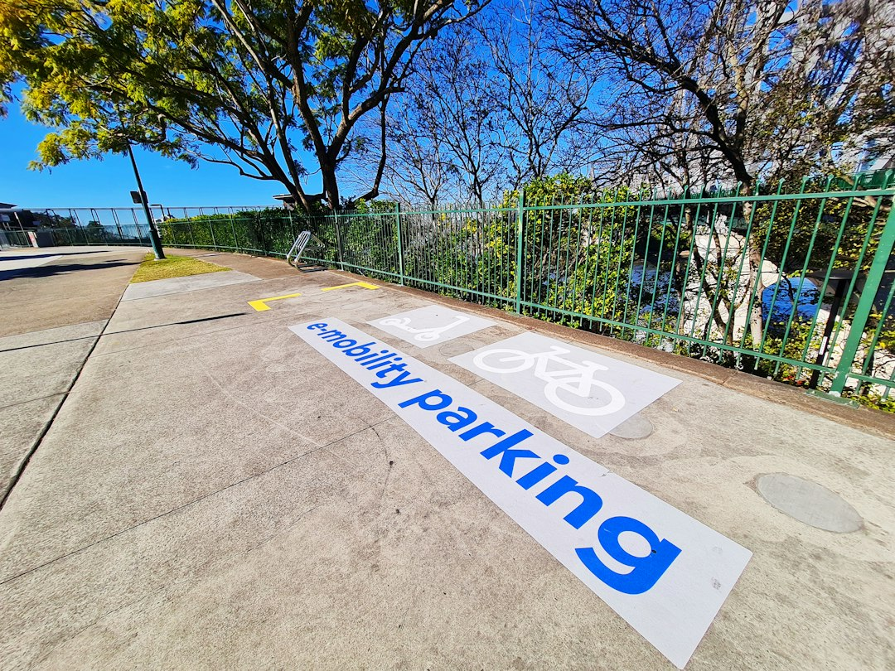

A home charger assessment should start with four site facts: where the vehicle normally parks, where the charger could be mounted, how the cable might reach the switchboard, and whether an owner or building manager needs to approve anything first. Fixed electrical work in Queensland needs an appropriately licensed electrical contractor. A switchboard upgrade is not automatic, and any estimate remains indicative until the actual site, load and access have been assessed.
For Brisbane homeowners comparing ev charger installation brisbane options, the useful starting point is the parking position, switchboard access and approval path, rather than a charger model alone.
Ev Charger Installation Brisbane Explained
EV Charger Installation Brisbane presents the first step as preparation: record where the vehicle normally parks, where equipment could sit, how a cable might reach the switchboard, and whether owner or building-management questions exist. That gives a contractor enough context to assess the property instead of guessing from a short message.
Describe the charger position and the parking pattern together. A tidy wall location may be less practical if the cable does not suit how the car is normally parked. Add the switchboard location, any access limits, and whether the car space is beside the dwelling, in a garage, or in a managed area.
Who this applies to
This guide is for Brisbane householders preparing for a residential charger assessment. It is most useful when the charger is expected to be fixed equipment, the vehicle has a regular parking position, and the owner wants to gather the right details before requesting a review.
- Detached homes: note the parking position, proposed mounting point, switchboard access and any driveway or garage constraints.
- Managed buildings: ask who can approve the equipment location, cable route and contractor access before installation details are finalised.
- Rentals: separate permission from the electrical assessment, so a contractor is not asked to assume approval that has not been given.
- Older or uncertain switchboards: ask for condition and capacity to be assessed before assuming an upgrade is needed.
A related local guide to home EV charging preparation in Brisbane is useful when comparing how early planning questions are framed.
Switchboard and circuit questions
The published FAQ gives a careful answer on switchboards: an upgrade is not automatic. The observed board condition, available capacity and proposed charging load all affect the answer, so a firm conclusion should follow assessment rather than precede it.
Better questions are practical: what charger load is being considered, what protection would be required, what route would the cable take, and what does the existing board allow? The same logic applies to the circuit. The contractor assesses the intended load, switchboard and cable route before specifying circuit and protection details.
If an estimate is supplied, read it as conditional. The source page says quotes, prices, rates and estimates are indicative and subject to individual circumstances and revision.
Approvals, access and photos
Approval questions can affect equipment position, visible cabling and contractor access. In a private garage, the pathway may be direct. In a shared or building-managed area, the owner or manager may want details before work is booked.
Useful photos show the normal parking position, the intended wall or post location, the switchboard area and any constrained access along the likely route. The enquiry form says photos can be provided later if a provider asks for them, so the first message can be a clear written description.
Access notes should mention nearby structures, gates, storage around the switchboard, or a car space that is not directly beside the dwelling. These observations help the contractor decide what needs inspection.
How to compare contractor responses
A useful response should refer to the actual property: parking position, charger location, switchboard access, cable route, approval questions and whether further inspection is needed. If those points are missing, ask for clarification before comparing any indicative price.
The enquiry stage is not a confirmed booking. The published form notes that submission does not confirm provider availability, timing or acceptance of the work.
- Who will complete the fixed electrical work?
- What still needs to be assessed on site?
- Is possible switchboard work separated from charger placement?
- Is any owner or building-management approval still outstanding?
- What could change after inspection?
Questions before agreeing to proceed
Before accepting a proposal, ask for the decision points in plain language: charger position, route back to the switchboard, intended load, circuit and protection approach, access requirements, and any approval still outstanding.
For Brisbane properties, local detail should come from the site itself. Inner-city parking, suburban garages and managed car spaces can raise different access questions, but the source material does not support suburb-by-suburb rules. Treat each property as its own assessment.
The final check is responsibility. Fixed electrical work must be completed by an appropriately licensed Queensland electrical contractor, so ask who is responsible for that work and what has been assessed before installation proceeds.
- Record the parking pattern. Write down where the vehicle normally parks and whether it is usually driven in or reversed.
- Choose a likely charger position. Identify the wall, post or garage area where fixed equipment would be practical and accessible.
- Check switchboard access. Make sure the switchboard can be inspected and note anything blocking access.
- Clarify approvals. Ask any owner or building manager whether consent or supporting information is needed.
- Request an assessment. Send the site details and ask what still needs inspection before installation can be specified.
| Decision point | Why it matters | What to prepare |
|---|---|---|
| Vehicle position | The cable needs to suit the normal parking pattern. | Describe how the car usually parks and where the charge port sits. |
| Charger location | The mounting point affects access and cable route. | Identify the proposed wall, post or garage position. |
| Switchboard access | Board condition and capacity affect circuit decisions. | Make sure the board can be inspected if requested. |
| Approvals | Shared or managed property may need consent first. | Ask the owner or building manager what information they require. |
| Estimate status | Estimates remain indicative until assessed. | Ask what could change after inspection. |
Common questions
Does a home EV charger always need a switchboard upgrade? No. The source page says an upgrade is not automatic. It depends on the observed board condition, capacity and proposed charging load.
Can circuit details be confirmed before seeing the property? The published FAQ says the intended charger load, switchboard and cable route are assessed before the circuit and protection are specified. A firm answer should be tied to the actual site.
Do managed properties need approval? The source page advises recording owner or building-management questions before requesting an assessment. It does not give a universal rule, so ask the relevant person what they need.
Who should complete fixed electrical work? The source page states that fixed electrical work must be completed by an appropriately licensed Queensland electrical contractor.
This guide covers practical preparation for a Brisbane residential EV charger assessment before installation is specified.